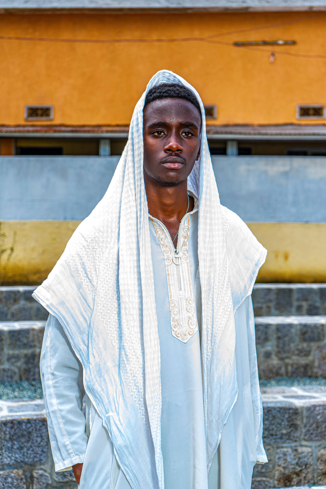
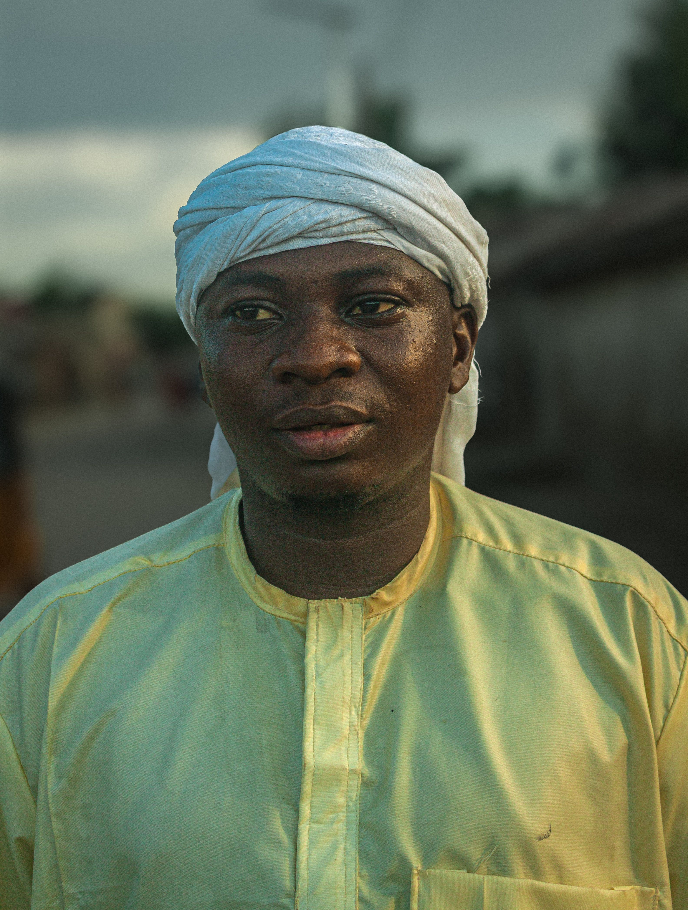

Amina Diallo
CEO, Tech4Africa
Sénégal
CEO, Tech4Africa
Sénégal
CTO, Innovate Ghana
Ghana
Data Scientist, AI Hub
Maroc
Lead Developer, Kigali Tech
Rwanda
ML Engineer, DataAfrica
Algérie
Fondateur, PayNaija
Nigeria
Head of Design, Nairobi Labs
Kenya
Analyste Data Senior, Orange Digital
TunisieIngénieure IA, Andela
Nigeria